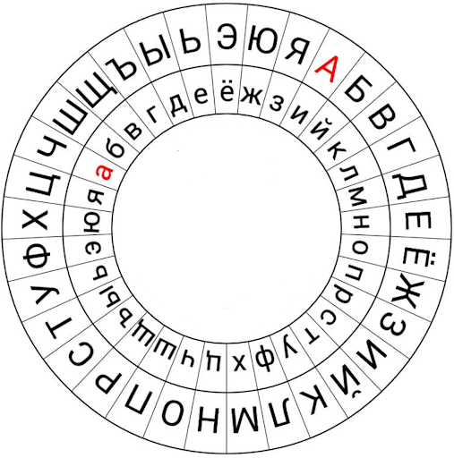

Пример шифрования:
В качестве ключа выберем последовательность букв в алфавитном порядке. Зашифруем сообщение “Альберти” с частотой сдвига через каждые 5 символов, а в качестве буквы, которая будет сопоставляться с буквой «А» на внешнем диске, выберем сначала «И», а потом «Б».
Сначала сопоставляем букву «И» на внутреннем диске с буквой «А» на внешнем. Далее начинаем шифровать сообщение. Первая буква сообщения – «А». Ищем её на внешнем диске и смотрим по внутреннему диску, в какую букву она зашифруется. Буква «А» перейдёт в «И», «Л» - в «Ф», «Ь» - в «Е», «Б» - в «Й» и «Е» - в «Н».

Поскольку частота сдвига была задана равной 5, то после зашифрования 5 символов необходимо поменять положение внутреннего диска. Сопоставляем букве «А» на внешнем диске букву «Б» на внутреннем вместо «И». Аналогичным образом шифруем оставшуюся часть сообщения.
Получим шифртекст: “ИифейнБсуй”.